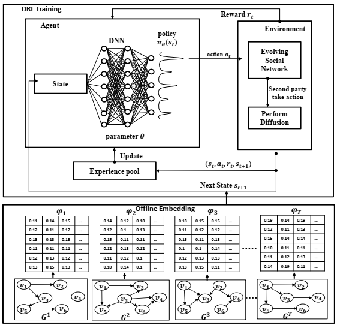
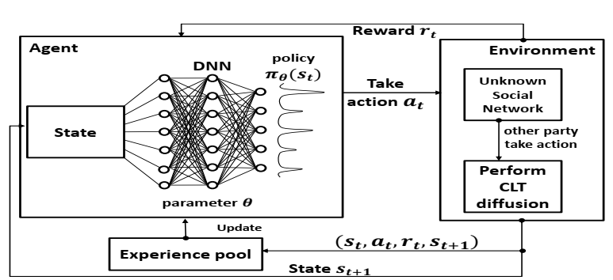
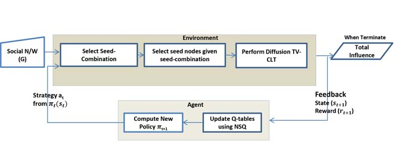

Global growth of computing and digital ecosystems boosted the electric energy consumption and CO2 emissions of modern data centers (DCs). In addressing this challenge, deep reinforcement learning (DRL) of DC cooling dynamics has shown its feasibility as an energy management tool for reducing the total electricity cost and adverse environmental impact of DCs. The used data center simulation models within the DRL environment are primarily black- or white-box providing a room for improving the balance between fidelity and performance. At the same, the research into DC waste heat reuse for local and district heating addresses the same challenges by creating new price- and CO2-based designs and operating scenarios thereby introducing more complexity in the DC thermal dynamics. This study aims to reduce the gap between recent trends in DC energy management by testing several algorithms with fast high-fidelity environment models and customized model-based agents. Through the application of these algorithms to dynamic Modelica models of two Danish data centers, equipped with distinct cooling technologies, we illustrate the potential of RL to significantly reduce energy usage and costs, maintaining optimal server temperatures, and efficiently managing the balance between different cooling systems. The two case studies range in their heating, ventilation and air conditioning (HVAC) design representing typical medium- and small-size DCs. For the medium-size DC the model predictive control (MPC) problem is solved under uncertainties by optimizing the operation of a high fidelity aquifer thermal energy storage (ATES), chillers and water-side free coolers (WSFC) while maintaining the dynamic HVAC temperatures in their required operation ranges. For the small-size data center, the same MPC problem includes cold storage, a chiller and air-side free coolers (ASFC). The heat reuse aspect is addressed by balancing the operation of the ATES and CS systems on the yearly and daily scales, respectively. Comparison with the model-free algorithms demonstrates an excellent trade-off between the fidelity and numerical performance. The produced optimal HVAC control schedules are close to real time, applicable on the yearly scale and thereby provide a valuable tool to Data centers to manage their thermal operations.
Global growth of computing and digital ecosystems boosted the electric energy consumption and CO2 emissions of modern data centers (DCs). In addressing this challenge, deep reinforcement learning (DRL) of DC cooling dynamics has shown its feasibility as an energy management tool for reducing the total electricity cost and adverse environmental impact of DCs. The used data center simulation models within the DRL environment are primarily black- or white-box providing a room for improving the balance between fidelity and performance. At the same, the research into DC waste heat reuse for local and district heating addresses the same challenges by creating new price- and CO2-based designs and operating scenarios thereby introducing more complexity in the DC thermal dynamics. This study aims to reduce the gap between recent trends in DC energy management by testing several algorithms with fast high-fidelity environment models and customized model-based agents. Through the application of these algorithms to dynamic Modelica models of two Danish data centers, equipped with distinct cooling technologies, we illustrate the potential of RL to significantly reduce energy usage and costs, maintaining optimal server temperatures, and efficiently managing the balance between different cooling systems. The two case studies range in their heating, ventilation and air conditioning (HVAC) design representing typical medium- and small-size DCs. For the medium-size DC the model predictive control (MPC) problem is solved under uncertainties by optimizing the operation of a high fidelity aquifer thermal energy storage (ATES), chillers and water-side free coolers (WSFC) while maintaining the dynamic HVAC temperatures in their required operation ranges. For the small-size data center, the same MPC problem includes cold storage, a chiller and air-side free coolers (ASFC). The heat reuse aspect is addressed by balancing the operation of the ATES and CS systems on the yearly and daily scales, respectively. Comparison with the model-free algorithms demonstrates an excellent trade-off between the fidelity and numerical performance. The produced optimal HVAC control schedules are close to real time, applicable on the yearly scale and thereby provide a valuable tool to Data centers to manage their thermal operations.
Research Projects
Data Centers Cooling Optimization
Deep Reinforcement Learning Meets Network Embedding for Evolving Social Networks
Competitive Influence Maximization (CIM) aims to maximize the influence of a party given the competition from other parties in the same social network, like companies find key users to promote their competitive products on the social network to achieve maximum profit. Recently, learning-based solutions are introduced to tackle the competitive influence maximization problem. However, such studies focus on the static nature of social networks. This paper proposes a deep reinforcement learning-based framework employing network embedding, termed as DRL-EMB, to tackle the CIM problem on evolving social networks. The DRL-EMB key objective is to find the best strategy to maximize the party's reward, considering budget and competition with information propagation and network evolving being run in parallel. We validate our proposed framework with the DRL-based model using hand-crafted state features (DRL-HCF) and heuristic-based methods. Experimental results show that our proposed framework, DRL-EMB, achieves better results than heuristic-based and DRL-HCF models while significantly outperforming the DRL-HCF model in terms of time efficiency.
Deep Reinforcement Learning and Transfer Learning for Unknown Social Networks
Recent studies have considered the reinforcement and deep reinforcement learning models to address the competitive influence maximization (CIM) problem. However, these models assume complete network topology information is available to address the CIM problem. This assumption is unrealistic as it is difficult to obtain complete social network data and requires exhaustive efforts to obtain it. In this work, we propose a deep reinforcement learning-based (DRL) model to tackle the competitive influence maximization on unknown social networks. Our proposed model has a two-fold objective: the first is to identify the time when to explore the network to collect network information. The second is to determine key influential users from the explored network, using optimal seed-selection strategy considering the competition in the social network. Moreover, we integrate the transfer learning in DRL to improve the training efficiency of DRL models. Experimental results show that our proposed DRL and transfer learning-based DRL models achieve significantly better performance than heuristic-based methods.
DRL-based Method for Social Networks Analysis
Novel Nested Q-Learning for Time-Constrained Social Networks
 In this paper, we examine a time-constrained competitive influence maximization where the parties wish to maximize their profits before the respective deadlines. Besides, the parties need to determine how to select the seed nodes and when to initiate information propagation in the network, such that the decision results in the optimal reward given the time and the budget constraint. To this end, we propose a novel reinforcement learning-based framework named seed-combination and seed-selection that is built on a nested Q-learning (NSQ) algorithm. This way, we can derive the optimal in both budget allocation and node selection that results in the maximum profit. In evaluating the proposed model, we consider the scenarios when the competitors’ strategy is known, unknown, and not available for training. The results show that the proposed NSQ algorithm could improve the rewards by up to 50% compared with the state-of-the-art algorithm, STORM-Q.
Boosting Reinforcement Learning with Transfer Learning
In this work, we propose a transfer learning method in reinforcement learning to reduce the training time and utilize the knowledge gained on source network to target network. Our method relies on two ideas, the first one is the state representation of the source and target networks in order to efficiently utilize the knowledge gained on source network to target network. The second idea is to transfer the final Q-solution of source network while learning on the target network. We validate our transfer learning method in similar or different settings of source and target networks while competing against the competitor's known strategies. Experimental results show that our proposed transfer learning method achieves similar or better performance as a baseline model while significantly reducing training time in all settings.